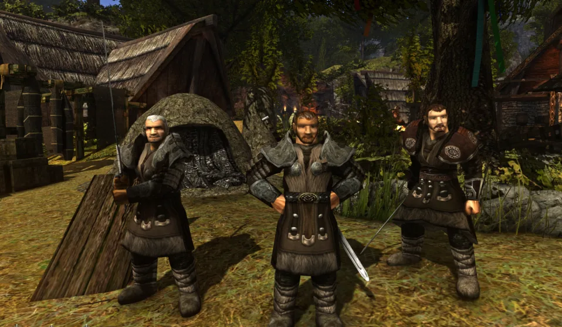

Schnellinstallation
Kurzfassung der manuellen Installation für History of Khorinis.

Kurzfassung: Die verbindliche Vollfassung steht auf Installation. Diese Seite ist nur der schnelle Ablauf aus der übernommenen Wiki-Seite.
Gothic 2 DNDR frisch installieren
Ohne Mods. Laut Wiki erhältlich bei Steam etc.
Patch-Reihenfolge installieren
Patch 2.6, Patch 2.6 Fix und SystemPack 1.8.
HoK-Moddateien kopieren
HoK_anims.mod, HoK_meshes.mod, HoK_scripts.mod, HoK_textures.mod, HoK_worlds.mod, HoK_sounds.mod in den Gothic-II-Data-Ordner kopieren.
GMP Launcher einrichten
Alias HoK, URL 85.215.60.15, Port 28960, Gothic-II-Pfad in den Settings setzen.
Account und Charakter erstellen
/register <Accountname> <Passwort> und danach /newchar <Charactername>.
Vollständige Quelle
Die vollständige importierte Installationsseite enthält die Links und alle Schritte aus dem hochgeladenen Wiki-Export.